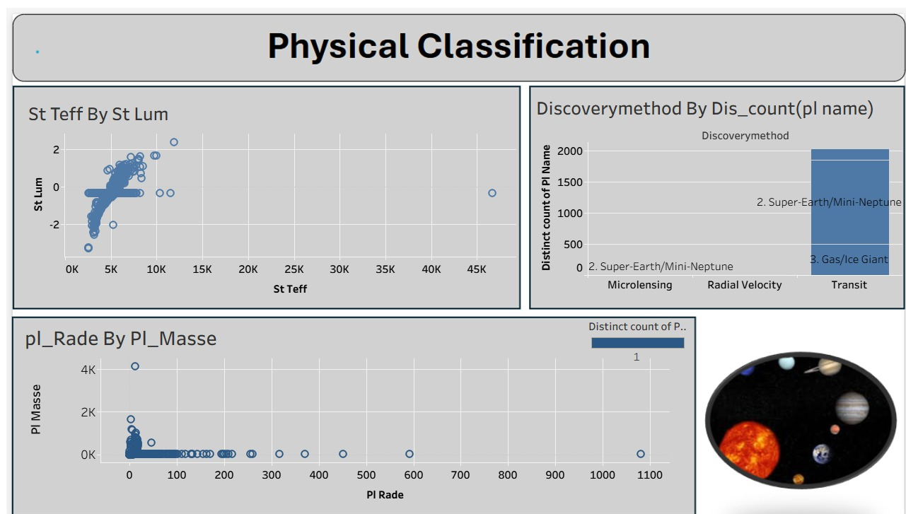
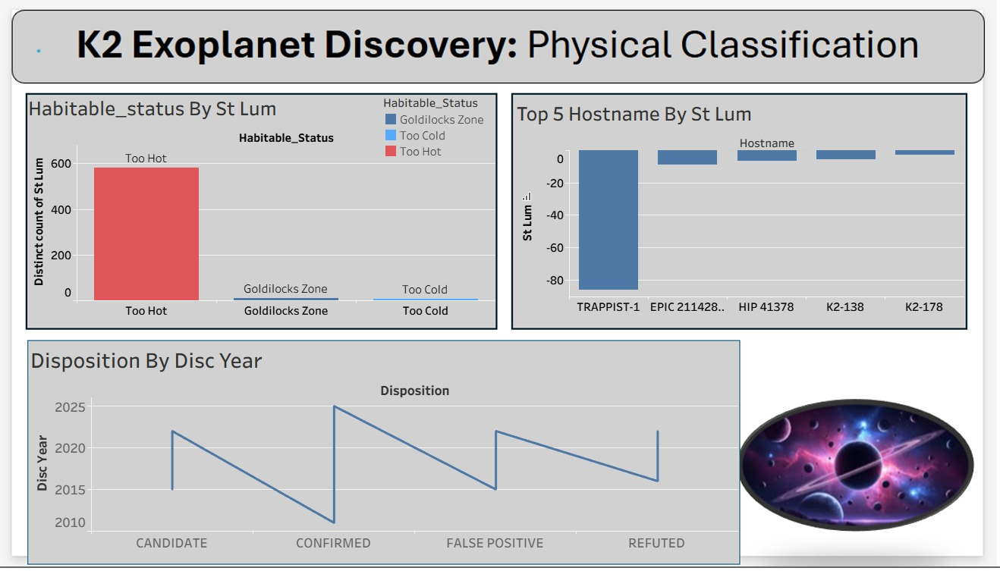
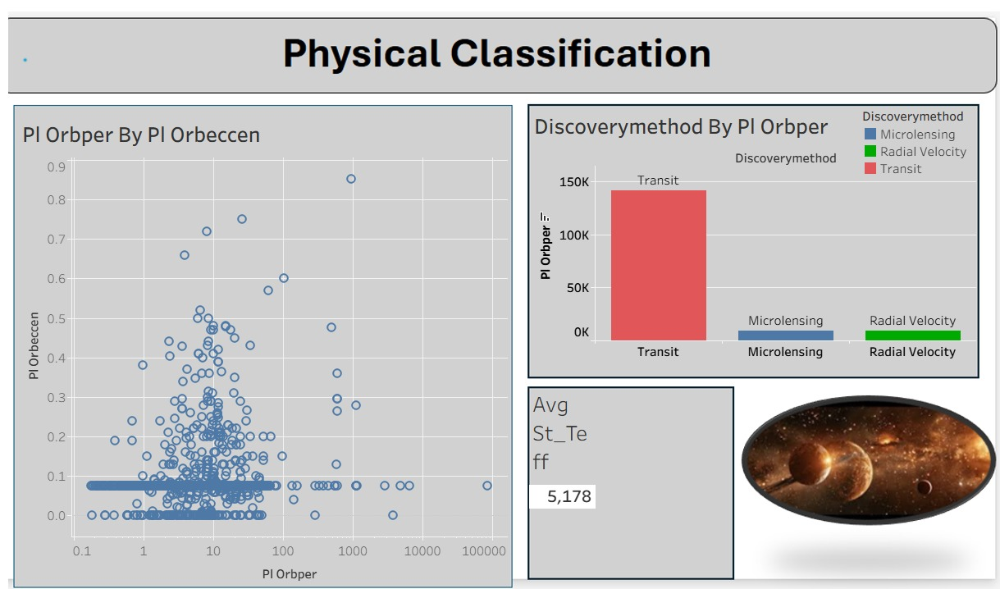

🌌 Physical Classification
🔹 1. Stellar Temperature vs Luminosity
This chart illustrates the relationship between a star’s effective temperature (St Teff) and its luminosity (St Lum).
It shows a clear trend — as the star’s temperature increases, its luminosity also rises.
This demonstrates that hotter stars tend to be brighter, aligning with the fundamental principles of stellar physics.
🔹 2. Discovery Methods Comparison
This bar chart compares the number of discovered exoplanets according to the discovery method used.
It reveals that the Transit Method dominates, detecting the largest number of planets.
Other methods, such as Radial Velocity and Microlensing, contribute fewer but scientifically valuable discoveries.
🔹 3. Planetary Radius vs Mass
This scatter plot displays the relationship between a planet’s radius (pl_Rade) and its mass (pl_Masse).
Most planets cluster around smaller radii and masses, representing Earth-sized and Neptune-sized worlds.
A few outliers with very large values likely correspond to massive gas giants like Jupiter.
🔹 4. Visual Reference
The image above represents the diversity of planets and stars, visually supporting the concept of physical classification in our universe.
K2 Exoplanet Discovery Data Analysis
🔸 Habitable Status by Stellar Luminosity
This bar chart shows that most of the discovered planets orbit stars that are Too Hot.
Only a few planets fall into the Goldilocks Zone, which is considered habitable.
A small number of planets are in the Too Cold range.
🔸 Top 5 Host Stars by Luminosity
This chart shows the Top 5 stars that host the most planets, based on stellar luminosity.
TRAPPIST-1 is the leading host star, followed by stars like EPIC 211428 and HIP 41378.
🔸 Disposition by Discovery Year
This line chart tracks the disposition of discovered exoplanets over time:
CANDIDATE: Awaiting confirmation.
CONFIRMED: Verified planets.
FALSE POSITIVE: Mistaken detections.
REFUTED: Rejected detections.
The data spans from ~2015 to 2025.
Orbital Characteristics & Discovery Methods
🔸 Orbital Period vs. Eccentricity
This scatter plot visualizes the relationship between:
Orbital Period (days) – how long a planet takes to orbit its star.
Orbital Eccentricity – how elliptical or circular the orbit is.
Most exoplanets have low eccentricity, meaning their orbits are nearly circular.
🔸 Discovery Methods by Orbital Period
The bar chart shows the dominant detection methods:
Transit Method is by far the most commonly used.
Microlensing and Radial Velocity methods are less frequently used.
🔸 Average Stellar Temperature
The average temperature of host stars is displayed as 5,178 K, giving an idea of the star types involved.